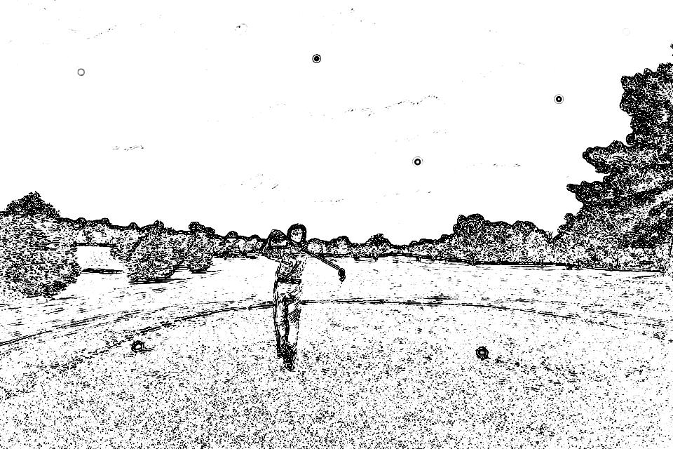

Remove: Content-Aware, Heal and Clone
Take out sensor dust, specks, blemishes, wires and small distractions, filled from what's around them or from a source you choose. Each spot is a setting, not a change to the pixels: move it, resize it, pick another source or delete it any time.
Open the tool
In Develop, press Q, click the bandage button in the tool strip under the histogram (between Crop and Masking), or choose Develop › Remove Tool (Q). Press Q, Return or click Done to close it. Spots keep working after you close the tool; they're part of the photo's edit, in previews, exports and Edit In.
Make a spot
Click on a speck to make a round spot the size of the brush. Drag along a wire, a hair or a scratch to make a spot that follows the stroke. How the spot is filled depends on the mode at the top of the panel.
- Content-Aware
- The default. Fills the spot from texture found all around it, piece by piece, so water, sky, grass or skin carry on through it, even where no one place nearby would do. The fill appears after a moment (the spot shows Heal until then) and is kept, so later edits don't redo it. Press / for another fill if the first one repeats something.
- Heal
- Atelier picks a source next to the spot, the place where the photo around it looks most like the area around the spot. Heal copies the source's texture and blends it into the colors and brightness around the spot, so the fill meets the photo with no visible edge. Best for dust, skin and anything on a smooth or even area.
- Clone
- Copies the source exactly as it is. Use it where Heal would smear a pattern or an edge, for example along a line or next to a sharp border.
Change the source
A selected Heal or Clone spot shows a solid outline, its source a dashed outline, with an arrow from the source to the spot. A Content-Aware spot has no source; switch it to Heal or Clone to choose one.
- Drag the dashed outline to take the fill from somewhere else.
- Press / for the next best source Atelier found (on a Content-Aware spot, another fill).
- Drag the solid outline to move the spot; its source moves with it.
- Click another spot to select it. Its settings show on the panel's sliders; changing them changes that spot.
- Press Delete to delete the selected spot, or Esc to deselect it.
Every new spot, move, change and delete is one step in History, so ⌘Z undoes it.
The Remove panel
- Content-Aware / Heal / Clone: the mode for the next spot, and for the selected spot.
- Generative AI (Content-Aware only): ComfyUI fills new spots, and the selected one, instead of Atelier finding the fill in the photo (below).
- Size, Feather and Opacity set the brush and change the selected spot. Size is a share of the photo's long edge ([ ]); Feather is how softly the fill fades into the photo (⇧[ ⇧]). Double-click a name to reset it, or hold ⌥ and click Reset Brush to reset all three.
- Show Overlay shows every spot's outline. The selected spot always shows.
- Visualize Spots shows the photo in black and white to find dust (below).
- How many spots the photo has. The panel's reset button (↺), or Develop › Clear All Spots, deletes them all in one undoable step.
Generative AI: people and large objects
Content-Aware finds its fill in the photo, which is right for dust and wires but smudges a person or a large object in a busy scene. For those, choose Content-Aware, turn on Generative AI and paint over what should go. Atelier sends the area around the stroke to the Remove Object recipe in ComfyUI (the server, edit model and generation size are in Atelier › Settings… › AI), and the model paints it in.
- While ComfyUI works (a minute or more) the spot shows a Content-Aware fill, and the panel shows the progress with Cancel. You can keep making spots, or go to another photo; the fill is saved to its spot when it's done.
- The result is that spot's fill: it fades in through the spot's Feather and Opacity, and stays an edit. Your original is never changed, and no new photo is made.
- Press / for ComfyUI to make another. The current fill stays until the new one is in.
- Moving or resizing the spot makes a new fill once you let go, since the old one was made for where the spot was.
- Later White Balance and Exposure changes move the fill with the photo. After changing Lens Corrections or Transform, press / for a new fill.
Needs ComfyUI Generative AI needs ComfyUI running with the Remove Object recipe, as for AI tools. If it can't be reached, the panel says so and the spot keeps its Content-Aware fill.
Visualize Spots
Dust is hard to see on a sky or water at normal size. Turn on Visualize Spots (or press A while the tool is open): the photo turns white with its edges in black, so every speck shows as a dark ring. Drag Threshold to the right to show fainter specks. You can keep making spots while it's on; it turns off when you close the tool.


Keys
| Q | Open or close the Remove tool |
| [ ] · ⇧[ ⇧] | Brush size · feather |
| / | Next source for the selected spot (Content-Aware: another fill; Generative AI: ComfyUI makes another) |
| A | Visualize Spots |
| Space-drag | Move around the zoomed photo |
| Delete | Delete the selected spot |
| Esc | Deselect, then close the tool |
Copy and paste Paste Settings and Sync leave each photo's own spots alone, as Lightroom does by default: dust sits in a different place on every photo. Presets never carry spots.
Large objects Content-Aware is made for dust, specks, blemishes, wires and small things on a plain or even background. A person or a large object in a busy scene can come out smudged; for those, turn on Generative AI.